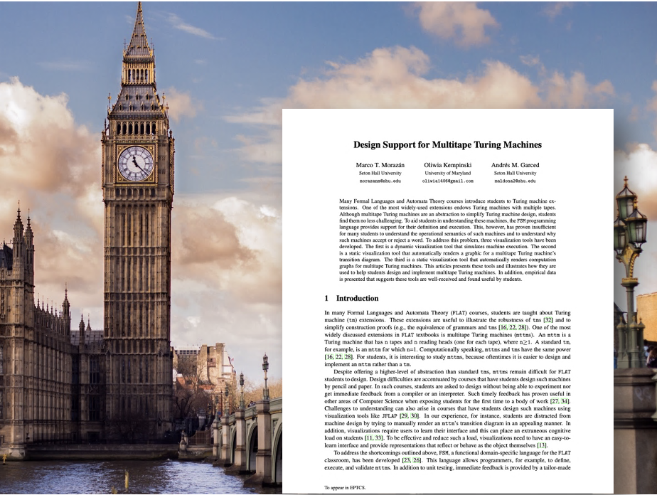
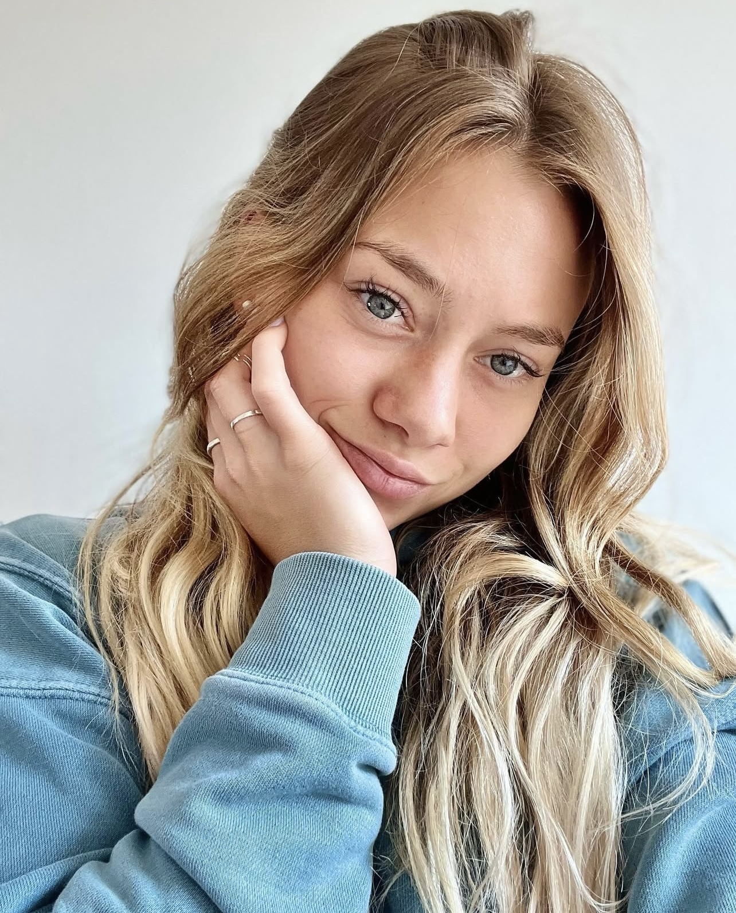
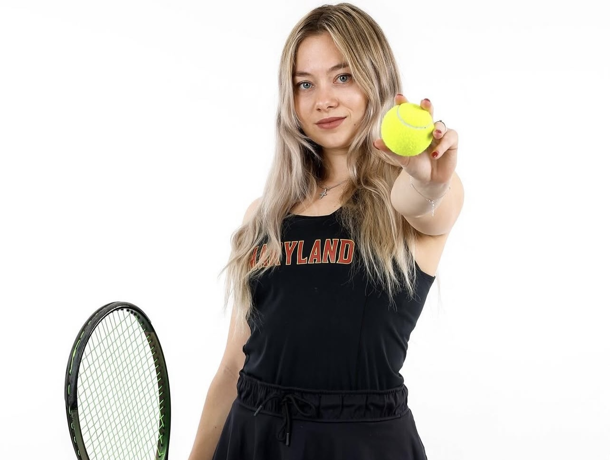
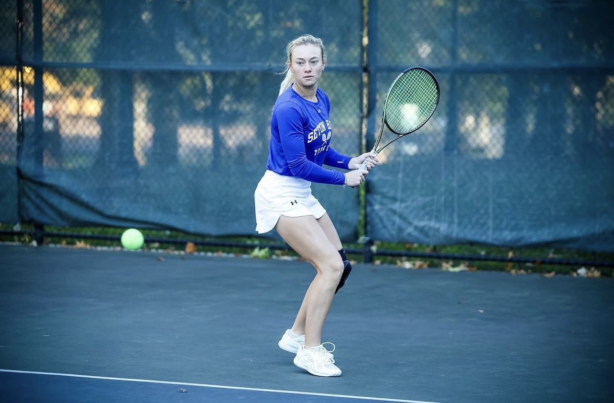
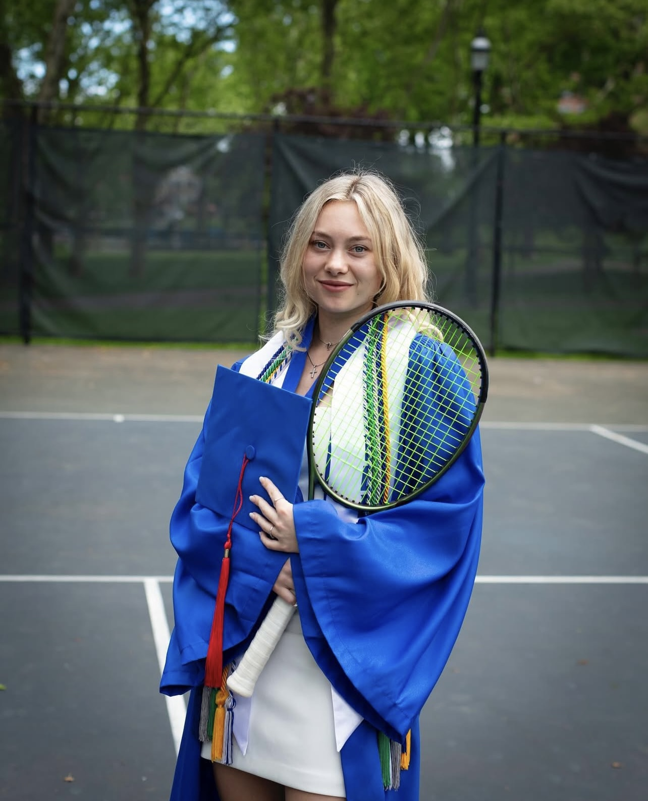
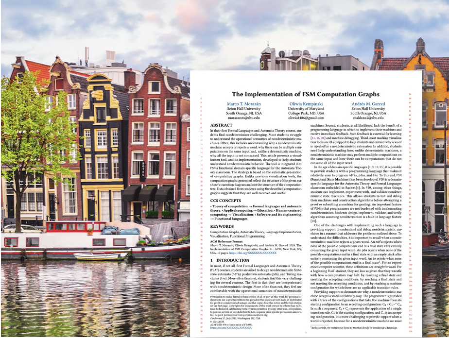
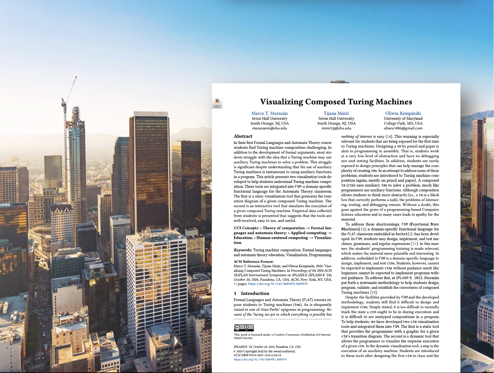
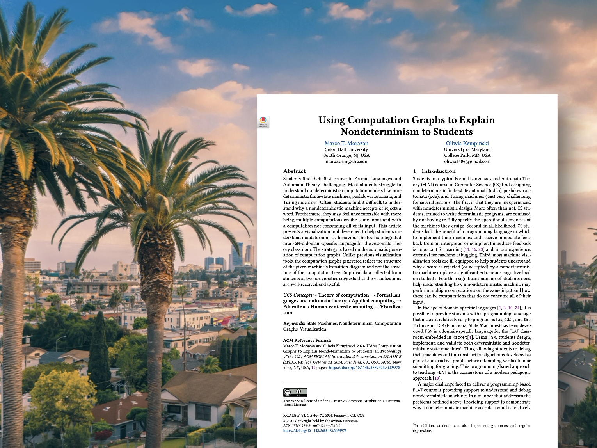
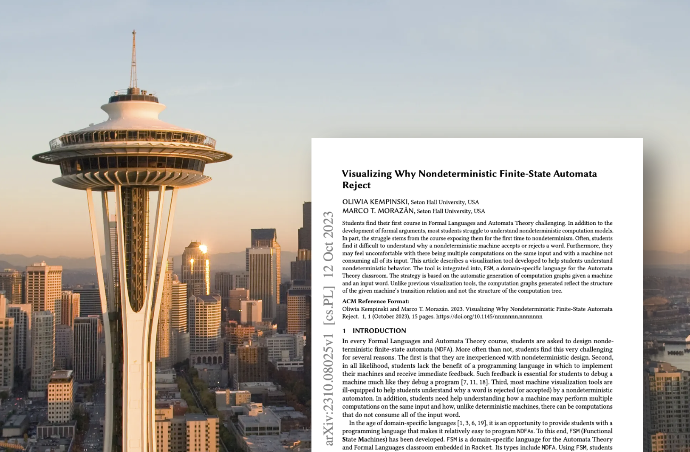

Design Support for Multitape Turing Machines
TFPiE 2025: Symposium on Trends in Functional Programming in Education
Published: TBD

I am a third-year PhD student in Computer Science at the University of Maryland. My research, guided by my advisors Leo Lampropoulos and Ian Miers, explores Programming Languages and Cryptography, with a focus on using formal methods and zero-knowledge proofs to verify private systems without exposing sensitive details.
As an undergrad at Seton Hall University, I worked with Marco Morazán on Automata Theory, extending domain-specific languages with tools to better understand nondeterminism.
I played Division I tennis for Seton Hall University and later for the University of Maryland. Reach out if you'd like to play!




TFPiE 2025: Symposium on Trends in Functional Programming in Education
Published: TBD

IFL 2024: Proceedings of the 36th Symposium on Implementation and Application of Functional Languages
Published: 02 May 2025

SPLASH-E 2024: Proceedings of the 2024 ACM SIGPLAN International Symposium on SPLASH-E
Published: 17 October 2024

SPLASH-E 2024: Proceedings of the 2024 ACM SIGPLAN International Symposium on SPLASH-E
Published: 17 October 2024

ICFP 2023: Scheme and Functional Programming Workshop 2023
Published: 12 October 2023
Download my CV for more details on my academic and professional background.
Feel free to reach out via email or connect with me on professional networks.